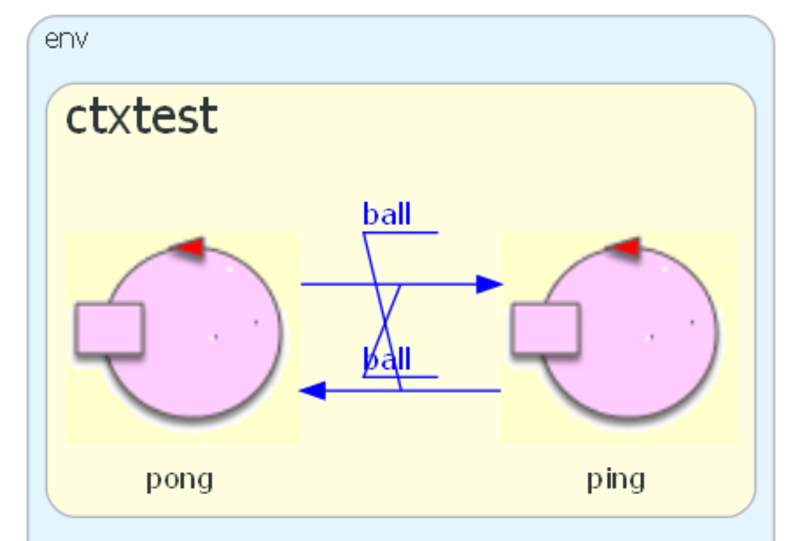

PingPongSystem24¶
Introduction¶
Design and development of a system that simulates the exchange of information in a ping-pong style.
Requirements¶
Create a distributed software system that simulates how the information is exchanged between a ping and a pong players.
The goal , but only to simulate the exchange of information between two end-points.
Requirement analysis¶
In the ping-pong game there are:
two players, called here
pingandponga
ballthat is exchanged by the playersa initial sender, that the committer has indicated as the
ping
A first model of the system¶
pingandpongare modelled as actorsthe ball should be modelled as a message, but we don’t have enough requirements to fix it as:
a dispatch, or
as a request, or
as an event
Thus, our first model of the system does not introduce any message.
System pingpong24
Context ctxping ip [host="localhost" port=8014]
Context ctxpong ip [host="127.0.0.1" port=8015]
QActor ping context ctxping{
State s0 initial{
println("$name STARTS ") color blue
}
}
QActor pong context ctxpong {
State s0 initial{
println("$name STARTS") color green
}
}
|

|
Functional test plans (non formal)¶
The system works well when the ball is continually exchanged beween the two players.
However, the system should be able to terminate its behaviour after a certain number of exchanges.
Problem analysis¶
For the , we say that:
the ball as an event: is not appropriate, since the information is exchanged between two precise end-points
the ball as request: is not appropriate, since the gaal of each player is to avoid the possibility of a reply from the other player
the ball as dispatch: seems more appropriate
.
To evoid an endless exchange of the ball, we assume that the system terminates when a player does dot receive the ball within a prefixed amount of time TMAX.
TMAX¶
val TMAX = 1500
This fact accounts for one the possible situations:
a player has been unable to receive the ball
the ball is lost, out of the game field
the ball has hit the net
…
Of course, we do not face the problem of indentifying the winner, since the goal of the game is only to exchange the ball.
Logical architecture¶
The ping-pong system¶
{kind=link}
Initially, it is wise, , by defining an executable model where both the players are .
System pingpong24
Dispatch ball : ball(N) "info exchanged"
Context ctxtest ip [host="localhost" port=8014]
QActor ping context ctxtest { ... }
QActor pong context ctxtest { ... }
|
 |
{kind=link}
ping¶
QActor ping context ctxtest{
[# var N = 1;
/*2*/val TMAX = 1500L
#]
State s0 initial{
/*2*/delay 1000 //``pong`` started ...
println("$name sends $N ") color blue
/*3*/forward ``pong`` -m ball : ball($N)
}
Goto receive
State receive{
//println("$name received ") color blue
}
Transition t0
/*4*/whenTimeVar TMAX -> endofexchange
/*5*/whenMsg ball -> reply
State reply{
[# N = N + 1 #]
delay 500
println("$name sends $N ") color blue
forward ``pong`` -m ball : ball($N)
}
Goto receive
State endofexchange{
println("$name ENDS ") color blue
[# System.exit(0) #]
}
}
|
ping
|
pong¶
QActor pong context ctxtest {
[# val TMAX = 1500L #]
State s0 initial{
println("$name STARTS") color green
}
Transition t0
/*1*/whenTimeVar TMAX -> endofexchange
/*2*/whenMsg ball -> reply
State reply{
onMsg( ball : ball(X)){
[# val N = payloadArg(0).toInt() #]
println("$name receives $N") color green
if [# N <= 4 #]{
delay 500
/*3*/forward ``ping`` -m ball : ball($N)
}//no forward if N == 5
}
}
Transition t0
whenTimeVar TMAX -> endofexchange
whenMsg ball -> reply
State endofexchange{
println("$name ENDS ") color green
}
}
|
pong
|
A first Deployment¶
Execute
gradlew distZipGradle generates:
pingpong24\build\distributions\pingpong24-1.0.zipCopy the zip file under some directory (e.g.
C:/Iss24Run)Unzip the file
Work in in the directory
pingpong24-1.0\binRun one of the following scripts:
pingpong24.bat(in Windows)pingpong24.sh(in Unix)
This deployment will be used, shortly, during the test of the system.
Test plans¶
Let us say that
The system works well if the exchange terminates when the
pinghits the ball for the5thtime.
To automate the test, a testUnit should:
activate the system
understand when the system ends
observe the state of one of the players, e.g.
ping
In order to achieve the above goals, we:
|
{kind=link}
A testable system¶
In order to promote testing automaticon, let us introduce new messages:
System pingpong24
Dispatch ball : ball(N) "info exchanged by the players"
//FOR TESTING
Dispatch ballview:ball(N) "observed info|payload suggested"
Request info : info(X) "sent by testUnit to observer"
Reply obsinfo: obsinfo(X) for info
|
testable system
|
pingobserver¶
QActor pingobserver context ctxtest{
[# var N = 0; var NLAST = 0; val TOBSMAX=3000L #]
State s0 initial{
println("$name STARTS") color magenta
/*1*/observeResource ``ping`` msgid ballview
}
Transition t0
/*2*/whenTimeVar TOBSMAX -> gameended
/*3*/whenMsg ballview -> updateinfoongame
State updateinfoongame{
onMsg( ballview : ball(X) ){
[# N = payloadArg(0).toInt() #]
/*4*/ if [# N > 0 #]{ [# NLAST=N #] }
}
}
Transition t0
whenTimeVar TOBSMAX -> gameended
whenMsg ballview -> updateinfoongame
State gameended{
println("$name waits for request") color magenta
}
Transition t0
/*5*/whenTime 2000 -> endsystem
/*6*/whenRequest info -> handleinfo
State handleinfo{
replyTo info with obsinfo : obsinfo($NLAST)
/*7*/ [# System.exit(0) #]
}
}
|
pingobserver
|
Update the deployment¶
If we change the model (and therefore the code of our system) we don’t need to regererate all the deployment,
but only to update the code in the bin directory, by copying the new jar file:
pingpong24\build\libs\pingpong24-1.0-plain.jar
testUnit¶
A test unit is reported in TestPingPong24SingleCtx and described in userDocs/uniboDisi_pingpong24.html
Note that there are two way for activate the system:
: activates the system to be tested by executing
Process p = Runtime.getRuntime().exec("./gradlew.bat runAll");
: activates the system to be tested by executing
Process p = Runtime.getRuntime().exec("./src/main/java/test/pingpongexec.bat");
where``pingpongexec.bat`` is related to our first Deployment :
cd C:/iss24Run/pingpong24-1.0/bin pingpong24.bat
The second way is more appropriate for testing, since it is faster and allows to test the system in a more realistic environment.
Project¶
To make the project more manageable, we introduce another actor, called referee, with the following responsibilities:
start the system by emitting the
startgame : startgame(X)stop the system by emitting the
stopgame : stopgame(X)observe the state of the
pingplayerobserve the state of the
pongplayerinteract with the testUnit